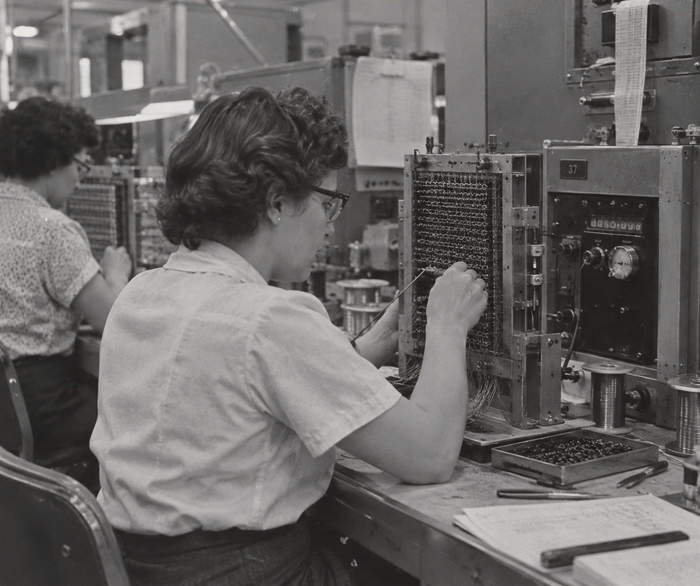
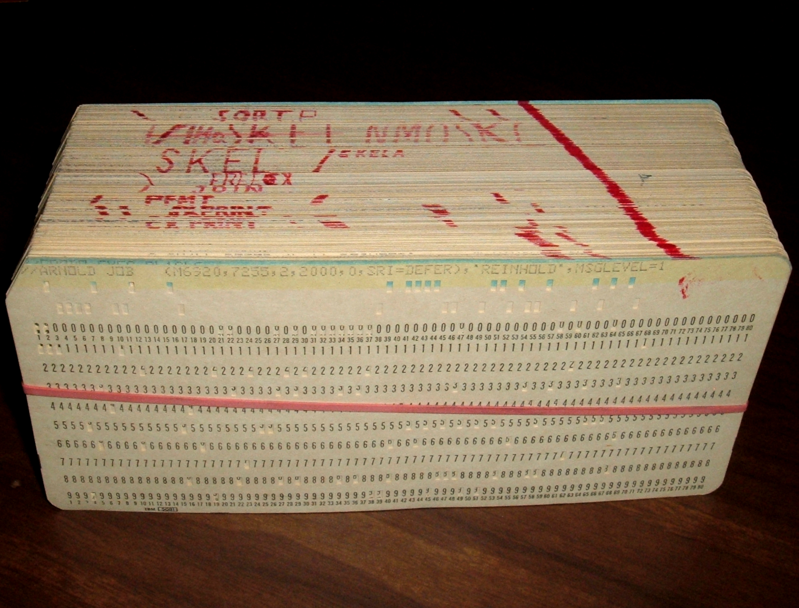
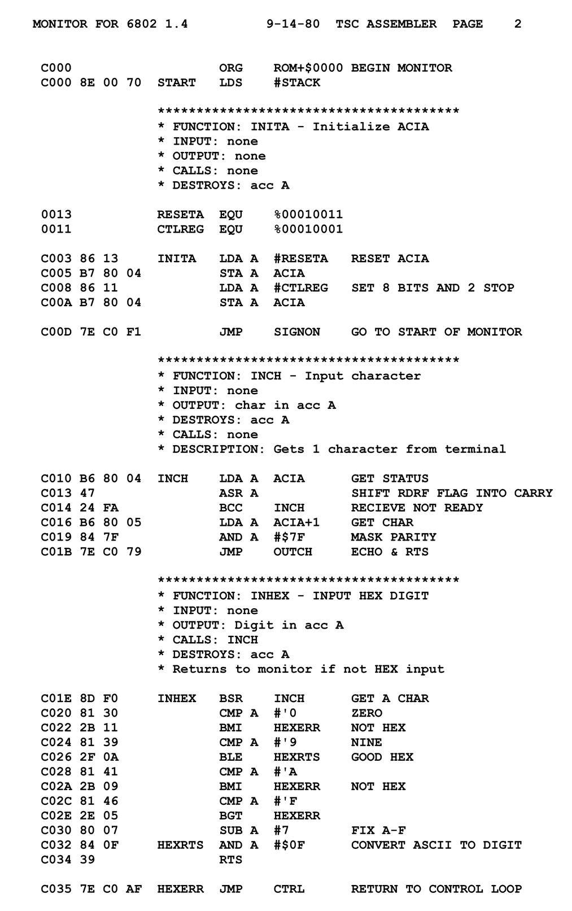
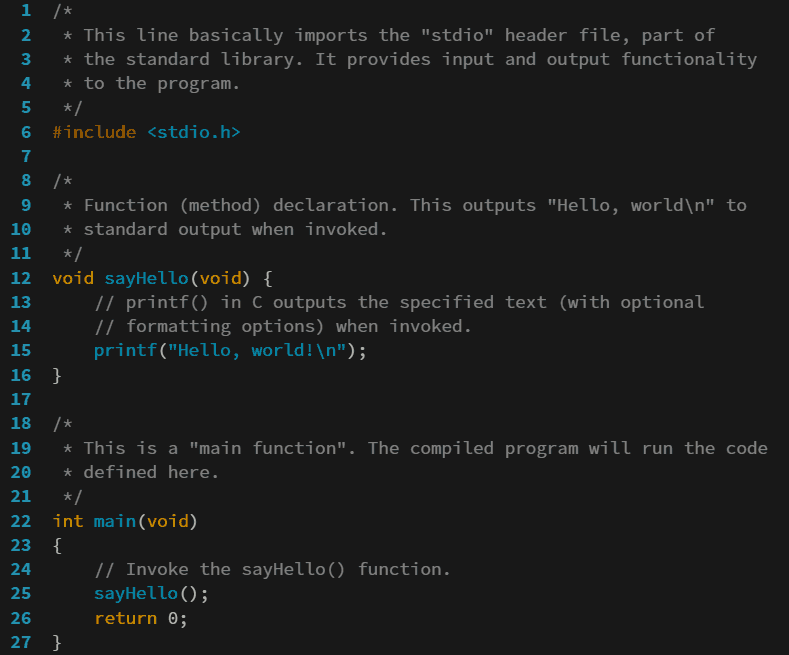

What must exist?
State the product, interfaces, constraints and acceptance criteria clearly enough to act.
Idea to Hardware in Days, Not Months




State the product, interfaces, constraints and acceptance criteria clearly enough to act.
Agents traverse disciplines, create implementation and operate specialist tools.
Tests, reports and physical behaviour constrain confidence at every step.
Here is how you can do it too.
Sixteen voices. Expressive DSP. MIDI input. Linux control. FPGA audio. Managed startup. Physical acceptance.
| Decision | Chosen approach | Trade made deliberately |
|---|---|---|
| MIDI policy | ALSA + C on the PS | Millisecond control cadence for mature device handling and flexible policy. |
| Audio generation | HLS in the PL | Fabric resources for deterministic per-sample execution. |
| Control transfer | Shadow bank + commit | One-invocation staleness for coherent state. |
| Audio clock | Dedicated domain + CDC | Boundary logic for correct I2S timing. |
| Arithmetic | Floating-point HLS | High LUT/DSP use for direct algorithmic development. |
AMD HLS Skills supplied the domain method for reading reports and reshaping the generated hardware.
| Lane component | BRAM18K | DSP | FF | LUT |
|---|---|---|---|---|
| Two sine/cosine engines | 0 | 26 | 1,438 | 5,312 |
| Shared filter engine · two BPF calls | 0 | 32 | 2,758 | 5,570 |
| Two frequency / coefficient `exp2` engines | 2 | 12 | 194 | 2,540 |
| Envelopes, LFO routing, fold, state + arithmetic | 0 | 24 | 8,150 | 12,842 |
| One physical process_voice lane | 2 | 94 | 12,540 | 26,264 |
HLS estimate · 38-397 cycles per logical voice · excludes mixer, shared reverb, output processing, and RTL integration.
For me, equations and explicit state made the DSP precise.
Start from existing algorithms, plots, and numerical experiments.
Reference models and assertions can define expected behaviour.
Requirements, interfaces, tradeoffs, and acceptance criteria all count.


| Capability | Contribution to the project |
|---|---|
| Vivado MCP Server | Operated projects and Tcl, monitored runs, inspected reports, and diagnosed implementation failures directly. |
| AMD HLS Skills | Supplied HLS-specific optimization methods, implementation patterns, and report interpretation. |
| Knowledge + evidence | Preserved decisions across sessions while tests, timing, readback, and physical sound constrained every claim. |
Express intent in LaTeX, MATLAB, Python, tests, diagrams, requirements, or the combination that best captures your design.
An effective optimization of the wrong objective.
Very few cycles to produce a sample.
A critical path that missed the 10 ns clock target.
“We have up to 2,000 cycles per sample. Prioritize timing closure, not minimum cycle count.”
| Design | Latency | Estimated period | Outcome |
|---|---|---|---|
| Serial accumulation | 111 cycles | 13.301 ns | Missed 10 ns target |
| Four-way staged accumulation | 136 cycles | 7.230 ns | Met target |
| Full accepted data path | 1,768 cycles | Within contract | Routed system closed timing |
| EDF / PS-managed architecture | Direct MIDI decoding in PL |
|---|---|
| ALSA Sequencer provides standard MIDI events and mature device handling. | Requires custom USB/transport and parser integration. |
| Discovery, disconnect, and reconnect are ordinary Linux service concerns. | Device lifecycle becomes hardware behavior. |
| Voice policy and control mapping change without rebuilding PL. | Policy changes require hardware iteration. |
| EDF + dfx-mgr package and manage a replaceable runtime PL payload. | A static payload couples more behavior to the hardware image. |
Firmware, overlay, application, ALSA support, and services ship together; reconnect restarts software without needlessly reprogramming PL.
| Resource / check | Used | Available | Result |
|---|---|---|---|
| CLB LUTs | 80,882 | 117,120 | 69.06% |
| CLB registers | 69,256 | 234,240 | 29.57% |
| Block RAM tiles | 15 | 144 | 10.42% |
| DSP48E2 | 398 | 1,248 | 31.89% |
| CLBs occupied | 14,259 | 14,640 | 97.40% |
| Timing | WNS +0.828 ns | WHS +0.010 ns | PASS |
| Layer | Evidence |
|---|---|
| Algorithm | Independent reference, native tests, C simulation, HLS synthesis, and co-simulation. |
| Integration | AXI/register/I2S and complete-top simulation; gated timing, methodology, DRC, and CDC. |
| Board | Identity SYNT, ABI 1.0, coherent generations, physical diagnostic and HLS audio. |
| Performance | 16 voices · 48 kHz · 1,768 cycles · zero overruns. |
| Runtime | Persistent startup, clean stop, cold boot, and FC25 disconnect/reconnect recovery. |
| Human | Velocity, four controls, ten-note capture, clean releases, responsiveness, accepted sound. |
Specify boldly. Delegate deliberately. Verify relentlessly.